Discoverability App: Structuring Information Flow for Cultural Access
Conducted Oct-Dec 2023
Role: UXR + UI
Figma, Miro
Summary:
Our team of 6 designers tackled information access and affordability challenges for Torontonians in the arts and culture space, specifically museums.
A city rich in culture, yet hidden behind paywalls.
Toronto is rich in culture, yet residents struggled to visit due to systemic information fragmentation.
Our project's goal was to solve this through a mobile platform,
designing a centralized information outlet that transforms scattered deals into easy-to-use information chunks.
We reasoned: If awareness is the problem, the solution must centralize discovery.
Before talking to users, we wanted to understand the landscape. We began by mapping the landscape of cultural access in Toronto. Our secondary research examined how easy it is for residents to visit museums, and how people think about admission prices and discounts.
We looked at articles, blogs, social posts, and forums. Reddit was especially useful. Many people discovered free museum days only by chance. Academic sources were limited, but city sites and news reports offered data on pricing and attendance.
From this research, a clear picture formed. Free and discounted admissions do exist, but they remain underutilized because information is scattered across sources and poorly communicated.
Asking the right questions
We surveyed 42 participants (36 valid responses) and conducted 12 in-depth interviews with Toronto residents
who were interested in visiting museums.
Our goal was to map information behaviours with respect to ticket discovery.
Our primary research focused on four key questions:
- 1. How can museum admission information be made more visible?
- 2. How do people feel about ticket prices?
- 3. How aware are they of discount programs?
- 4. How do accessibility and affordability influence attendance?
What we found
Most of our survey participants actively searched for discount details online, but described it as a frustrating hunt. The median effort rating was 2.14/5, and over half said easier access to deals would make them visit more often.
Interviews reinforced this. People love museums for culture, history, and entertainment, but the friction of finding discounts pushes them away.
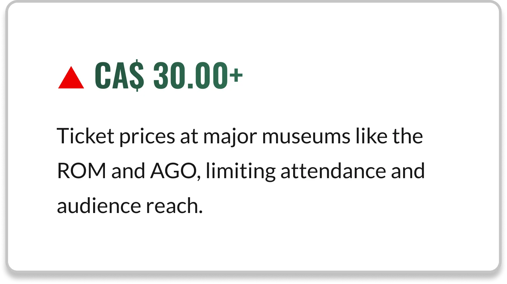
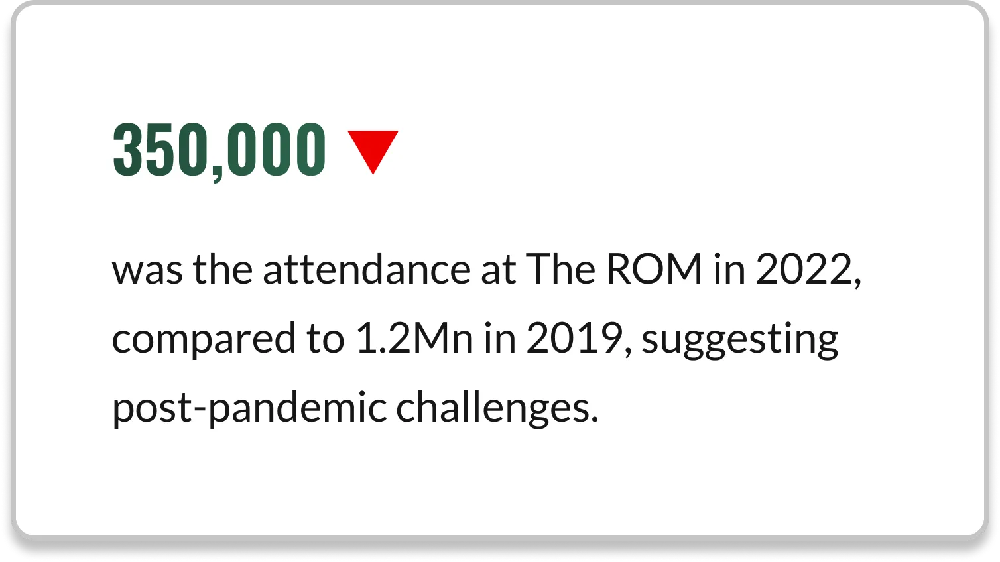
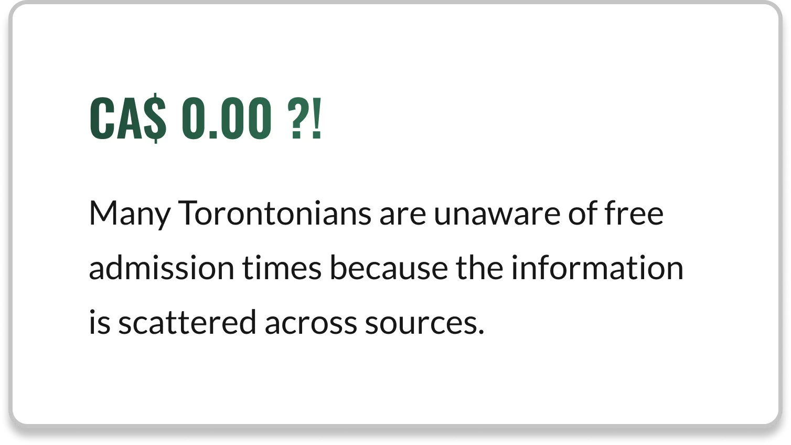
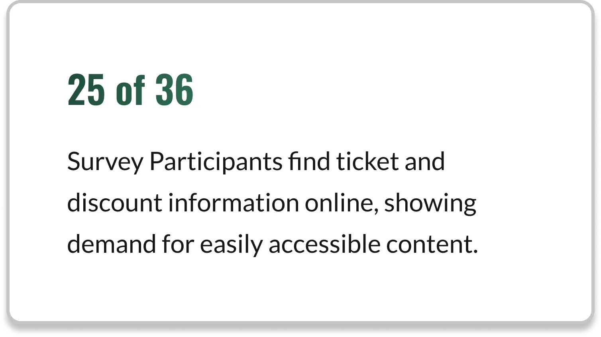
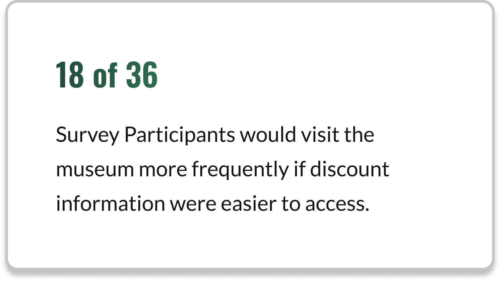
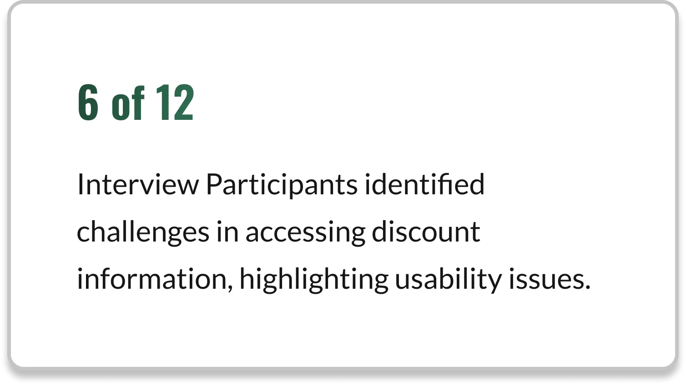
Pay Heed to Mary's Story
Mary, a hard-working and busy student, when time allows, she opts to visit museums with her friends or even solo!
Despite prolonged efforts to find discounted tickets, the benefits are overshadowed by the time spent searching.
This delay results in exceeding her budget, highlighting how difficult it is for her to obtain affordable tickets.
Mary’s journey mirrored that of many Torontonians. Her story is what guides our Product design process.
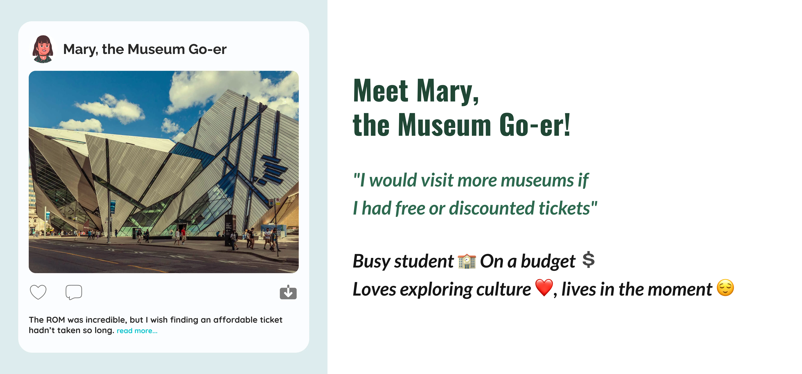
Turning research into design priorities
To convert insights into features, our team used an Impact vs. Feasibility matrix to prioritize ideas.
From Mary’s pain points, we defined key design directions:
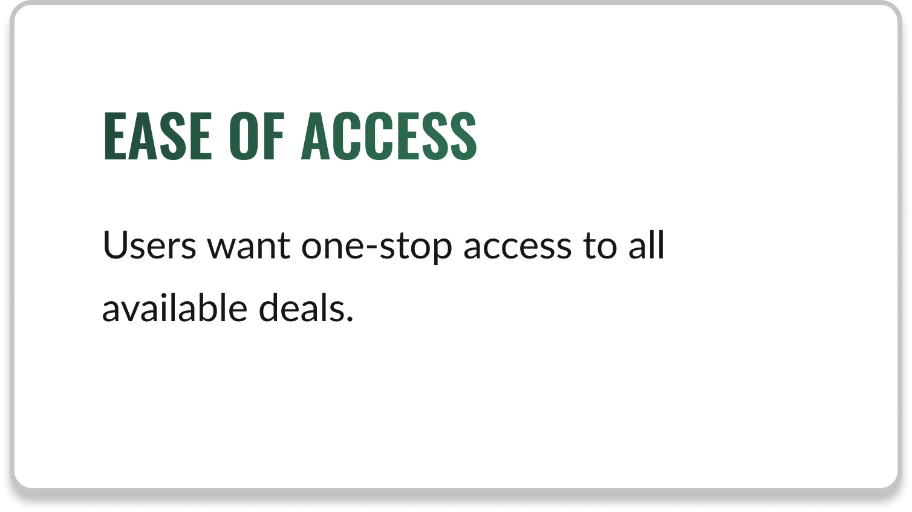
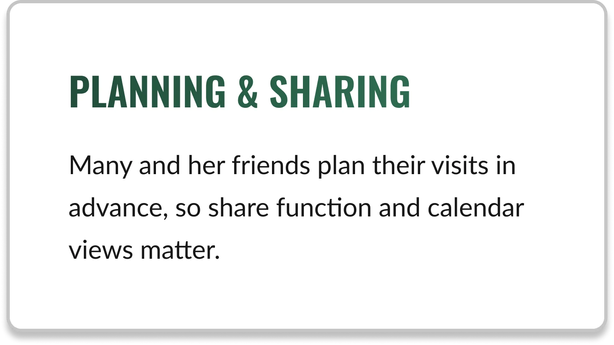
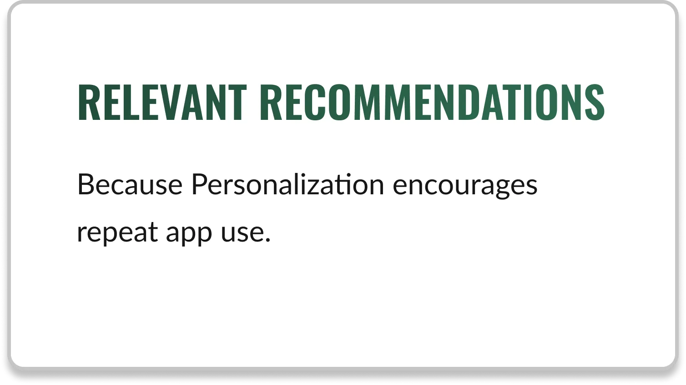
Designing the experience
User Flows
The first step was to define the task flow, ensuring Mary could transition from finding a deal to planning her visit.
We focused on ensuring users could successfully locate & save information without informational/cognitive overload.
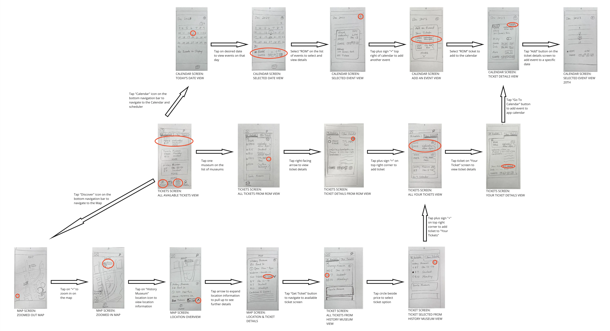
Low Fidelity UI
Our low-fidelity prototype, designed in Figma, was presented to a panel of senior UX researchers through the University of Toronto’s iSchool during our course INF1602 Design Playback sessions.
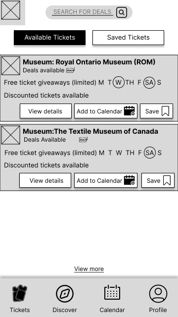


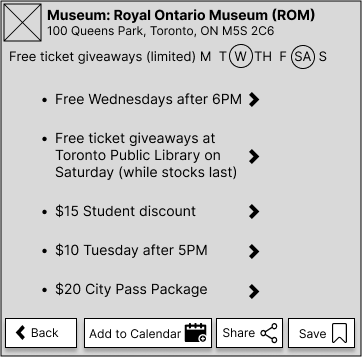
Testing & Validation
We tested our low-fidelity prototype and our planned task flows using moderated remote sessions via Zoom with participants aged 18+ interacting with our prototype while we observed and interviewed them.
We collected both quantitative performance data and qualitative feedback to identify friction points.
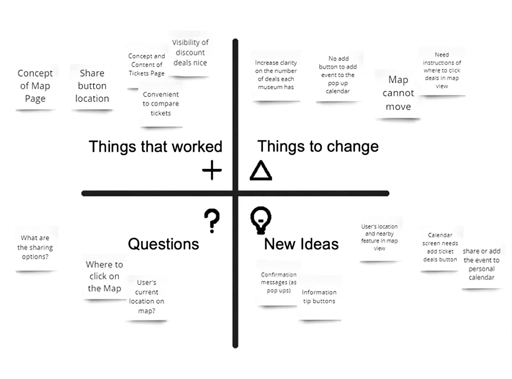
After the internal and panel reviews, I revisited the mid-fidelity stage individually using the feedback.
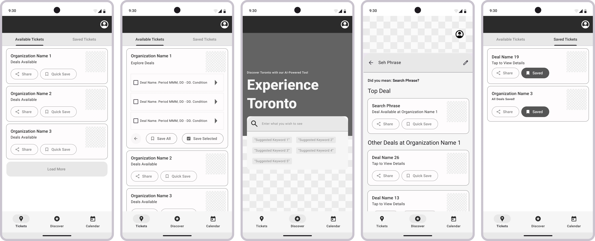